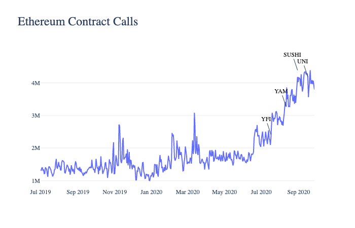

1.1. Overview
In 2020 we had a chance to experience a true paradigm shift. In line with the ever-increasing demand for privacy and anonymity, a new subset of the crypto ecosystem emerged. While the theoretical concept of avoiding centralised parties has been around since the inception of Bitcoin, the Decentralised Finance (DeFi) market bloom in 2020 demonstrated the true potential of putting such ambitious ideas into action.
Not to mention, DeFi structures have been constructed on strong, value-driven foundations: decentralization, immutability, and absence of central, infinitely powerful bodies. The wider user base seems to agree with these calls for change - and the numbers show it. According to DeFi Pulse, the Total Value Locked (USD) in DeFi has been hitting all-time highs almost daily since the Q2 of 2020.
With that, timely and well-executed DeFi platforms proved to be a force to be reckoned with. For example, Uniswap, providing a decentralized Ethereum based protocol that allows users to safely exchange ERC-20 tokens, has reached $3 billion in total value locked. Launched just 2 years ago and growing at a neck-breaking rate, Uniswap has already surpassed 250,000 unique addresses and supported over $20B worth of trades. Several DeFi lending platforms - MakerDAO, Compound, Aave - enjoyed comparable success, having each locked north of $1B to date.
The need for a solution
When one thinks about the values and beliefs behind blockchain technology, it’s evident that transparency and immutability go hand in hand for all dominant blockchains.
Immutability, the original value proposition of blockchain technology, is still the leading benefit sought after by the public, when participating in any DeFi activities.
Transparency, on the contrary, is not as cherished: if given the option, consumers choose to remain anonymous over revealing themselves and their wealth.
Observing the issues in the DeFi space, a demand for anonymity is clear: BitMEX website visits in 2020 indicate a clear correlation between the desire to remain anonymous when proceeding with trading activities: after the Aug 14th 2020 announcement of mandatory KYC, website visits dropped 35% from 5.3 million visits in August 2020 to 3.4 million visits in October 2020, and hasn’t reached highs ever since.
With today’s existing solutions, users must either experience friction or deal with centralised entities if they wish to remain less transparent and anonymous when participating in DeFi ventures.
Blank wallet fights both friction and centralisation.
Blank believes everyone should have rights to their privacy. Privacy shouldn’t be “opt-in”, rather it’s something you could occasionally “opt-out” on your free will.
1.2. What is Blank?
Blank is the most private, non-custodial Ethereum browser wallet.
Blank uses smart contracts that allow users to hide the amounts and origins of cryptocurrency held, in a decentralized and frictionless manner.
Each time you want to make a withdrawal, Blank will create a new wallet address for you with the amount of crypto that you requested, which originates from the smart contract where everyone’s funds are pooled.
1.3. Blank Wallet Preview
Below is a preview of how the Blank wallet looks. While some of the buttons on this mockup bring you to new screens, this is just a showcase with very limited functionality.
2. Problems targeted
Unlike Bitcoin’s UTXO structure which offers greater privacy, Ethereum is built using an account-based model where a single address acts like a wallet and can make use of ETH or ERC-20 tokens without the need to transfer unspent balances. Although the practice of using a new address for each new transaction helps to reduce the data left behind, it’s impossible to hide all the information without relying on other services.
There are a few noteworthy problems on Ethereum:
2.1. Hiding Your Wealth
Holding wealth on centralised exchanges is never safe. Any literate investor would advise holding funds in a private wallet instead. By holding cryptocurrency in a private wallet, the user is still vulnerable to have himself or his wealth identified, if previous transactions were analyzed. Everyday transactions, such as sending payments to friends, become an excruciating task, as extreme effort is needed to preserve the privacy of wealth stored on chain.
Amongst the safest approaches is grouping wealth with other individuals, making it impossible to distinguish capital ownership. Ethereum’s smart contracts enable the possibility of grouping wealth in a trustless manner. Blank’s approach to this can be found in section 3.2.
2.2. Hiding Origins of Your Wealth
Ethereum’s ecosystem provides many financial opportunities: gambling, selling personal NFTs, speculating with controversial tokens and many more. After conducting these operations, in some instances, the user may not want to disclose how he accrued his wealth if it's irrelevant.
Blank believes that unconnected parties shouldn’t know more about you than necessary.
2.3. Less Transparent Trading Activity (ETH, ERC-20)
On August 8th 2020, many prominent figures on Twitter shared an address identified as “Zeus Capital”, with an onchain short position on Chainlink. In the following hours, there were many follow up tweets inviting traders to “go long on $link and do a short squeeze”, which resulted in a $17M short liquidation for the identified trader.
Despite the fact that the method used to identify the wallet is unclear, the use of multiple wallets and blurring the origins of funds could have made the identification a much more demanding task.
Similarly, on October 18th 2020, a known VC company PolyChain has been identified as a large buyer of YFI tokens. Despite the fact that this identification has resulted in a positive outcome for Polychain, causing an influx of new buyers, we have yet to see a possible negative outcome of this identification - once the VC company decides to exit their positions, it’s likely markets would experience fear, uncertainty and doubt, provoking large negative price action.
Currently, there are no existing solutions that would allow to hide ERC-20 assets in a decentralized way, with more convenient methods to hide trading activity (that is, frictionlessly create new wallet for each new transfer and so on).
Blank aims to introduce ERC-20 pooling via smart contracts, allowing traders to become less visible.
3. Technical Summary
3.1. Roadmap
Q1 2021 - Blank V1
- Web extension wallet with Tornado.Cash relayer → using existing Tornado.Cash infrastructure (0.1; 1; 10 and 100 ETH smart contracts with already pooled ETH) to deliver basic privacy functionality within a wallet.
- Referral system → Tracking deposits of referred users and rewarding the referrer in BLNK tokens.
- Public Security Audit → security measures before the release of V1 to ensure safety of funds held on Blank Wallet.
Q2 2021 - Blank V2
- ERC-20 Support → allowing any ERC-20 token deposits; promoting WBTC pool
- Automatic deposits → funds deposited into any personal Blank Wallet address will automatically be sent into the main Blank pool.
- One time address → each time withdrawing from the main Blank pool would automatically create a new address to withdraw into.
- Proof-of-funds compliance key → choose who you provide your transparency to. Providing a compliance key of specific withdrawn addresses would reveal the origins of the deposit.
- Web 3 compatibility → connect to all DeFi applications.
Q3 2021
- Blank functionality integration to Metamask snaps PlugIn → while still in Alpha, a full release would allow existing MetaMask users to install additional plugins, such as Blank plugin, to get additional features on their existing MetaMask wallet.
- Tor integration → The relayers, dApp sites or node providers could theoretically track users by the IP address the requests for deposit or withdrawal are coming from and thus connect depositing and withdrawing addresses. To mitigate this, Tor can be used, so the user’s IP cannot be tracked and changes with each action.
Q4 2021 - Blank V3
- Partial withdrawal → independent ETH pools, no longer based as Tornado.Cash relayers, instead of withdrawing the same amount deposited.
- Unique pool reward system → anyone can create reward milestones for pooling funds and providing privacy for others.
3.2. How does it Work?
The Blank Wallet V1 functionality is based on Tornado Cash private transactions.
The tornado mixer at tornado.cash is a tool that allows any address to send or mix their Ether or Ethereum tokens in a non-custodial way solely based on strong cryptography.
It uses smart contracts, where the Ether or Tokens can be deposited and then be withdrawn to a different address. There is no way to link the withdrawal to the deposit, ensuring complete privacy. This is accomplished by using zkSnarks proofs.
To make a deposit, the user generates a secret and sends the Pedersen Hash of a nullifier and the secret, along with the funds to mix, to the smart contract. This is called a commitment and is accepted by the contract, along with the funds.
A hash function is a one-way function, which means that the hash of a secret can be easily calculated, while it is near-impossible to calculate the secret from a given hash. This property is used to guarantee that only a user in possession of the secret to a given commitment can withdraw funds from the contract.
In order to make a withdrawal, the user needs to provide proof that they possess a secret to an unspent commitment in the smart contract. zkSnark technology allows to do that, without revealing which deposit corresponds to the secret. In other words, zkSnarks allow users to prove that they own a deposit in the contract, without revealing the exact deposit they know the secret of. The withdrawing address can not be connected to the depositing address in any way.
The so-called Anonymity Set shows how many deposits still await for a withdrawal. It is a measurement of anonymity, since the bigger the anonymity set is, the bigger is the scope of addresses that could theoretically be the depositing address for a withdrawing address.
To further increase anonymity and privacy, several measures can be taken. In order to not allow for external viewers to make a connection between depositing addresses and withdrawing addresses, the withdrawal should not be done right after the deposit for example.
Even though existing providers like tornado.cash offer user-friendly interfaces, the whole process can be very time consuming and too technically advanced for the average crypto user. This results in lower usage, a smaller Anonymity Set and in turn lower privacy. Users have to manage their notes, the creation and management of different addresses, and they have to take care of following best practices to preserve privacy, like when to withdraw and to use a different IP-address for each action.
3.3. How is Blank better?
Blank on the other hand, provides seamless integration with the anonymity pool to create a user-friendly browser extension wallet. Users do not have to write down secret phrases, go through tedious transaction processes or manually create several wallets. The ease of use in the wallet and its privacy features result in more usage, a larger Anonymity Set and, in turn, higher privacy for all users.
Blockchain users are also susceptible to off-chain tracking. Due to node and dapp providers receiving data from users, they can perform extensive tracking by fingerprinting and profiling the users’ requests. Blank goes one step further to provide the maximum amount of privacy while retaining a frictionless user experience. In order to further protect users from tracking, both on-chain and off-chain, Tor is integrated into Blank. This means that sending transactions to node providers or interacting with Dapps can be done over the Tor network, providing the user with complete anonymity.
3.4. Security
Without a doubt, security is an important factor when it comes to building advanced cryptocurrency wallet software. Blank is aware of this, and approaches security with a high level of attention. Additionally, we are also aware that security and privacy go hand in hand - one cannot work without the other.
Using proven and audited technology and best practices is the way to maximize security. The basic infrastructure on Blank is built by integrating already existing solutions and practices that have been proven over time.
The encrypted seed phrase, along with other sensitive data like addresses, keys and account data, is securely saved in the browser’s local storage. No online app, website or provider can access any of that secured data - the user remains with total control over their wallet. To store and manage accounts, MetaMask’s Eth-Keyring library used. We leverage audited and proven open source solutions to minimize the possibility of error.
Along with keys and accounts, Tornado secrets need to be safely stored inside the browser extension’s storage. To keep a minimum surface of attack, all secrets needed for the zkSnarks are derived from the wallet’s seed phrase. This also means that the user only has to save the seed phrase to be able to import all wallet data, including the zkSnark secrets.
The following graphic shows how hierarchical deterministic (HD) wallets are integrated into Blank and how Tornado secrets can also be derived from the HD wallet structure.
4. Business Model
4.1. Monetization
Although there are many existing Ethereum wallets that offer non-custodial cryptocurrency storage, an indisputable evidence suggests that monetization is a difficult topic for all. Introducing monetization with homogeneous products is tough, as consumers always have an option to switch and use a product that is free of charge, if other features are the same.
Blank wallet has an advantage over existing competitors, since it offers features that the market hasn’t seen before: built-in privacy. With a clear added value, we expect users to be comfortable with paying minimal fees in exchange for their untouchable privacy.
Initially, Blank Wallet will charge a 0.5% withdrawal fee for all transactions taken through the Blank pool. Our research shows this to be an optimal number, but it may increase or decrease based on user feedback.
4.2. Growth Model
Due to the way Blank wallet is built, every added user increases the privacy and untraceability for further transactions. Therefore, because a large user base is key for the success of Blank, we have built the user acquisition strategy systematically and sustainably to address any potential concerns. This section explores how the four main pillars of our user acquisition path - Affiliate Programs, Influencer Marketing, Community Angels, and Alternative Reward Systems - are expected to gradually drive users to the platform.
4.2.1. Affiliate and Referral Programs
We have seen the affiliate and referral schemes prove to be one of the most successful market penetration strategies over the years - both in regards to DeFi solutions and the wider cryptocurrency ecosystem. Namely, the DeFi space has seen a surge in popularity largely thanks to carefully planned and implemented affiliate campaigns.
For example, affiliates of the cryptocurrency derivatives exchange ByBit make referral earnings not only from people they refer directly but also generations of people referred by their referrals. Affiliates at the third level get 10% off trading fees, and extremely successful affiliates that bring in high-volume traders get commissions that could reach 35%.
Another fruitful referral program was executed by the Ledger cryptocurrency wallet. Ledger affiliates get 10% commission for every 10 dollars of product sold, which acts as a direct incentive to promote products - especially for those that have a following or great reach in the crypto community.
The instantaneous jump in Changelly’s monthly users and becoming a dominant player in the crypto exchange market could also be largely attributed to its affiliate program. Compared to similar programs, Changelly was unique in the delivery of round-the-clock live support, transparent rates, and easy-to-use platform, looking from the lenses of the user first. Such a customer-focused, seemingly flawless onboarding process with continuous support structure later landed major media channels like Coin Gecko and CoinTelegraph to support the program.
As we acknowledge the success of the aforementioned referral strategies, Blank will aim to combine these best practices that have clearly proven to be effective in delivering user growth. After the launch, Blank’s Affiliate and Referral Program will swiftly follow and can be described in 3 easy steps:
-
We will vet and approach influencers and media channels (such as popular blogs) that have high and active following and an unblemished reputation in the crypto community;
-
The influencers and other selected affiliate partners will promote Blank on their platforms to spread awareness and refer their audience to join;
-
Affiliates will be compensated based on their performance: 30% of the fees paid by referred users will be transferred to the influencers in BLNK tokens as a reward.
4.2.2. Influencer Marketing
We believe that, when executed strategically and attentively, influencer marketing is still a premier way to build a well-known and respected brand in the crypto space - and 89% of marketers agree. We will execute the influencer marketing strategy by inviting a select few to become Blank’s Brand Ambassadors - the long-lasting partners raising awareness about our news and initiatives.
Besides directly impacting the user growth, Blank expects influencer marketing to help instill trust in the product by associating our brand with that of respected opinion leaders in the community. This is why choosing the right-minded people to work with coupled with supreme reputation is crucial when choosing our influencer partners. After all, failure to do so may have detrimental effects and make the platform less trustworthy to join.
For instance, cryptocurrency derivatives exchange ByBit is known for their successful influencer marketing campaign. Out of 7.49% of traffic that came from social channels, 80% is attributed to Youtube, where most of it is likely influencer marketing or strong affiliate partners.
Thus, by associating their personal brand with that of ours, influencers will become brand ambassadors and a valuable asset for Blank long-term. Such a relationship would enable us to not only benefit from influencer referrals, but also gain the trust of the targeted audience we want to reach.
4.2.3. Blank Community Angels
The Community Angels will be used to further spread the word about Blank across social media, forums, and discussion channels.
Angels will act as an extension of our team in the community and take on several responsibilities. For example, they will answer questions of Blank’s users on major forums, explain the new features or updates on their social media accounts or administer official Blank’s social media groups. As a compensation for their time and effort, Community Angels will receive BLNK tokens as a fixed fee.
We are aware of the potential risks posed by such a program - lack of defined role, criteria of representatives and excessive behavior or spam. To prevent these risks with the Blank Community Angels, we will carefully monitor their activities to be in line with our values and run audits periodically to ensure all rules are adhered to. There will also be an opportunity to report any misuse of the Angel’s perks directly to us.
4.2.4. Unique Reward System
To further cement Blank as a go-to privacy transaction partner, we will explore unconventional ways to grow our user base. Blank’s Reward System will include a mixture of incentive programs, crypto airdrops, and giveaways for those inviting users.
As discussed, we put user growth near the top of our priority list as it directly improves the functionality and privacy using smart contracts. Thus, to maximize the incentives to refer others to join Blank, existing wallet users will be rewarded from the sign-up of their referred new users.
5. Market Overview
With the of know-your-customer (KYC) and anti-money laundering (AML) trends in the banking industry somewhat starting to be reflected in the regulation of cryptocurrencies in areas that are sometimes unnecessary, users are exposed to look for alternative ways to preserve unconditional privacy. In the quest to retain anonymity, privacy, and security, it is important to understand that typical wallets are challenged at best to protect one’s wealth and data against third parties. Naturally, there is an increasing demand for privacy-oriented wallets to defend against transactions being followed by bad actors.
The growing sentiment regarding privacy was also reiterated with the boom of DeFi applications in the summer of 2020. As the majority of DeFi platforms were built on Ethereum, the graph below shows how the launch of 4 DeFi tokens - YFI, YAM, SUSHI, and UNI - corresponded to the Ethereum smart contract calls.
 Source: Coin Metrics Network Data Pro
Clearly, both the public’s shift towards privacy-based solutions and the rise of DeFi are reflective of the favourable conditions for the Blank wallet. We rather conservatively estimate the Total Addressable Market of $3.03B as of Q1 2021 and expect the growth of the market to continue over the next 3-5 years. The next sections will provide an overview of our competitors and potential opportunities for growth and expansion.
5.1. Direct Competition
Our direct competition extends to platforms enabling private deposits of Ethereum by using smart contracts (such as Tornado Cash), anonymous wallets (such as Incognito), or even private, but not anonymous wallets (such as Metamask). The success of our competitors reassures that the demand for privacy-based transactions is as high as ever - though we also see clear competitive advantages that Blank brings to the market.
Tornado Cash has partially satisfied the demand for the anonymous and private transactions using smart contracts as showcased by its 466,173 ETH lifetime deposits - roughly $790,000,000 worth of deposits at today’s prices. However, we have observed inefficiencies due to the less user-friendly deposit system that requires manual, high-maintenance participation of the user. Also, we see untapped user growth potential by employing more aggressive marketing programs, which Tornado Cash has not done.
Incognito Wallet is another wallet that relies on zero-knowledge proof - one of the only provable ways to make something entirely untrackable. The wallet has executed $45,000,000 lifetime deposits, not including the volumes of its trading platform. The criticism of Incognito comes back to the lack of user-friendliness (especially for the less experienced) and lengthy deposit process.
Finally, having racked up more than 1M+ users on Google Chrome in under a year, Metamask has become an active player in the Ethereum community. While it has an inbuilt Privacy Mode, its functionality is limited: users nonetheless reveal their Wallet ID while using the platform.
With that being said, Blank is working towards combining all the good and limiting the bad from its peers. In the table below, we have critically evaluated the capabilities of our direct competitors and how we improve upon what already works.
| Feature | Blank | Metamask | Tornado.Cash |
|---|---|---|---|
| Hidden History | Yes | No | Yes |
| 0 User Tracking | Yes | No | Yes |
| Browser Extension Wallet | Yes | Yes | No |
| Web3 ready for all DeFi applications | Yes | Yes | No |
| ERC-20 Support | Yes | Yes | Only 4 stablecoins |
| Partial Withdraw | Yes | Yes | No |
| Automatic Smart Contract Deposits | Yes | No | No |
| Referral system | Yes | No | No |
| Revenue Sharing | Yes | No | No |
5.2. Untapped Markets
The yet untapped opportunities for Blank cannot be separated from the DeFi boom. We think that the recent rise in the public interest did not happen by chance - it is a reflection of a major shift towards privacy-based solutions. Thus, presuming a 5% of the current TVL of $16.51B in DeFi would agree to increase their privacy and anonymity, a computed dollar value would result in a ~$1,100,000,000 market size. As the trust in DeFi shows more and more strength, Blank is looking to be one of the main supporting mechanisms and beneficiaries from DeFi’s growth.
Another emerging opportunity for Blank is becoming a go-to service for those that were left unserved due to the struggles of privacy coins. Clearly, monero, zcash or dash were an effective privacy solution for quite some time - but the regulators have caught up. Major exchanges were forced to delist these privacy coins to comply with KYC and AML standards, thus severely limiting both liquidity and usability of such coins. We think that Blank is in a perfect position to deliver anonymous transactions - and with seemingly no hassle compared to privacy coins.
5.3. Indirect Competition
Although it may seem like a stretch, we perceive centralised exchanges to be an indirect competitor of Blank. Currently, they still host 99% of cryptocurrency transactions - and we see problems with it. While centralised exchanges have been a vital part of the ecosystem, their imperfections may finally become enough to switch to an alternative. Two of the largest problems arise from the concentration of power and security risks of such exchanges.
By using a singular centralised body, users take on a risk of potential performance issues, market manipulation, hardware failures, latency problems, and many other inherent problems when it comes to dealing with large volumes.
Even bigger problems arise as most centralised exchanges take custody of user funds, which makes them an ideal target for various cyber attacks. The questionable security, risk of fund loss and thefts can all be attributed to their centralized functioning. Instead, Blank proposes a trustless and decentralised system.
According to Chainalysis, ETH inflows to centralised exchanges over the last 180 days were close to $300,000,000 daily, or $110B yearly. As we effectively counter major user pains of traditional exchanges, we expect users to see Blank as a viable alternative. In turn, a 1% market assumption would define a $1,100,000,000 yearly market size for Blank.
6. Risks and Mitigation
As with any product, its success is dependent on many external factors. The team behind Blank wallet believes that by identifying possible upcoming risks, the success chances can be increased. There are several risks that we wanted to address - and how we intend to minimize them in response to varying market circumstances.
6.1. Insufficient Capital pooled to provide Privacy
The Blank v2 is expected to support ERC-20 deposits. Given that the privacy of Blank wallet highly correlates with the funds deposited and the usage of Blank functionality, it’s important that the initial liquidity is in place to offer basic anonymity for anyone starting to use Blank Wallet.
Mainly, this is where we plan to allocate most of the raised funds. Pooled ETH will be used to convert into popular ERC-20 tokens such as WBTC, and will be placed into the main Blank smart contract to provide initial privacy.
Lastly, the functionality introduced in v3 is planned to include pooling rewards - anyone will be able to create milestones, which upon being reached would reward all participating wallets.
6.2. High Gas fees due to zkSnark applications
Industry-wide events such as extreme volatility may cause Ethereum network to experience higher than usual gas fees, thus rendering Blank wallet to be expensive to use.
Besides, additional features mentioned in the roadmap may be gas intensive to roll out and operate. In response to that, there are a few paths we are exploring, which also depend on the developmental stage in the wider market at the time of our v3 launch.
Firstly, we expect that once Blank’s v3 functionality is rolled in Q4 of 2021, the issues of high gas fees should be solved (or partially solved) after the implementation of Ethereum 2.0.
In case Ethereum 2.0 gets delayed or does not happen, we are considering alternatives to tackle this problem. For one, we are exploring second-layer solutions to implement additional features such as Omise-GO. Also, we are examining other ecosystems such as Polkadot after the v2 version on Ethereum is released.
Our view remains that growing the core user base is one of the primary objectives after the launch, which plays directly into the greater privacy and security. For that, the supreme user-friendliness and hassle-free experience to onboard users will have to be ensured. Therefore, we will aim to choose the path which complicates our user acquisition strategy the least - by using platforms more widely accepted and preferred by the majority of the users. In other words, if the high gas issues end up impeding the usability of our platform, we will follow the user base to define our actions.
While we have outlined these potential plans of attack based on differing market conditions, we will monitor the industry trends going forward to make an educated and justified decision. In making these crucial decisions, we intend to remain flexible. We want to remain mindful of the feedback from both our users and experts. Therefore, Blank’s team will consult with the community and report our decisions through blogs and social media channels.
6.3. Market Volatility for Assets raised
There were several projects that raised capital in 2017 and ended up facing roadmap execution issues. Namely, this occurred because the management continued to hold funds raised in the native form (ETH), which lost more than 90% of its value over the course of a year.
Although Blank Wallet aims to continue the same path and raise funds in ETH, there are strict measures we will take to combat problems of the past. Specifically, GoBlank OU will convert enough ETH to cover for 6 months of development costs. After that, the company will continue to liquidate ETH to ensure enough capital is available at any point in time to continue developing for 6 months. As a result, we aim to minimize stoppages and disturbances to our development and the overall project.
6.4. Threats to frequent DeFi hacks
As outlined in the previous sections, we will deploy a major share of pooled funds in smart contracts to provide liquidity on the platform. Therefore, the prevention against DeFi hacks is equally relevant to Blank’s team (and investors) as it is to our users.
It is widely known that the DeFi ecosystem has encountered its fair share of hacks. The various hacks stemmed from the Turing-complete code, which has so far made the system rather vulnerable. Blank’s team, dealing with such a delicate matter, sees hacking as a big issue in the Ethereum space.
To limit these concerns, we will use industry-proven strategies that have been efficient in helping with transactional or payment-based platforms. For example, we will examine tested and industry-vetted open source projects, the code of which has been successfully used in preventing hacking risks.
Besides, we will audit the code before releasing it to the public with at least 2 different independent auditors - and publish their reports before releasing the update for our users.
Lastly, we will implement the bug bounty program, where users will be able to detect bugs for a reward. The bug bounties will be classified by severity in 4 types: from lowest (1) to highest (4).
Thus, our hacking prevention will consist of 3 rather contrasting, but complementary mechanisms: tested technical solutions, the third party audits from the experts, and the participation of Blank’s user community.
BLNK Token
Blank is a project that was born by and for the community of right-minded individuals. With Blank, we drive forward values that are shared by both our team and users: we all seek to regain the rights to privacy and anonymity that were unfortunately lost over the years. We thus envision Blank as a primarily community-driven venture, the success of which significantly depends on more and more users joining the platform.
The strength of our community will be physically immortalised with the use of BLNK utility token. The holders of our token will become a crucial pillar of Blank’s growth - it will enable liquidity provision for the platform, serve as a marketing mechanism, and strongly engrain our name into the DeFi space.
Beyond that, we have built BLNK token so that it is deeply rooted within the product’s ecosystem. We will now discuss five major ways in which BLNK token becomes an integral part of our wallet.
1. Fee Reduction for Token Holders
As previously discussed, wallet users will be subject to a service fee. However, BLNK token holders will benefit from notable fee reductions. Such a fee reduction will be tier-based and will depend on the amount of tokens held: 1,000 tokens will equate to a 10% fee reduction; 5,000 tokens - 15% fee reduction; 10,000 - 25% fee reduction.
2. Token Burn from 1/3rd of the Fees
A third of net profits collected from Blank wallet’s fees will be used on buying back the BLNK tokens from the market and burning it. As a result, the overall circulating token supply will be reduced. We believe that such a strategy will best position us for success long-term - as proved by similar buyback-and-burn programs from the likes of Binance or Bitfinex.
3. ETH/BLNK Liquidity Providers earn 1/3rd of the Fees
Contributing your tokens to a DEX liquidity pool ensures that BLNK tokens are available to trade when needed. Thus, we want to reward users helping to address liquidity concerns on decentralised liquidity provision platforms. We will send a third of our net profits to those staking the ETH/BLNK pair on Uniswap - this will be distributed proportionately to the amount pooled by the user.
4. Referral and Reward Systems use only BLNK Tokens
Emphasized as an important feature of our growth strategy, referrals will become another important use case of BLNK tokens. Wallet users, influencers, social media accounts, blogs or news outlets will all receive their referral rewards in the form of our tokens. In addition, airdrops that provide liquidity to the wallet will be sent only in BLNK tokens.
5. Exclusive Features and "access-first" Functionality to Token Holders
Some of Blank’s features will be limited only to those holding BLNK tokens. For example, non-token holders may not have access to as many hosted addresses. Also, if a user passes a specific threshold of held tokens, they may be welcomed to participate in our invite-only initiatives (such as Alpha or Beta testing of the wallet).
Disclaimer
8.1. Important notes
The present document is dedicated for marketing purposes only, meaning it is not intended to be legally binding and is delivered “as is”. Nothing in this document shall be deemed to constitute a prospectus of any sort, or an invitation, or a solicitation for investment, nor does it in any way pertain to an offering, invitation, or solicitation of an offer to purchase any security, ownership right, stake, share, future revenue, company participation, or other equivalent rights in any jurisdiction. Information in this document also does not constitute a recommendation by any person to purchase tokens, currencies, or any other cryptographic assets; neither the Issuer has authorized any person to provide any recommendations of such kind.
8.2. Forward-looking Statements
Observations contained in this document may constitute forward-looking statements or speak of future events or plans. Such forward-looking statements or information involve known and unknown risks and uncertainties, which may cause occurring events to be different. Errors, inaccuracy, or omissions may also occur in any such statements or information. Accordingly, no reliance should be placed on any such forward-looking statements or information, and all Issuer liabilities are disclaimed.